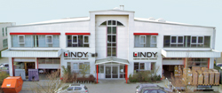

Avec plus de 20 ans d'expérience, LINDY est l'un des principaux fournisseurs et distributeurs de connectique, câblage et de cartes électroniques pour l'informatique.
Du premier site de production fondé dans les années 80 en Allemagne, nous avons développé un réseau de distribution dans l'ensemble du continent Européen. Nos produits sont stockés et expédiés depuis nos centres de distribution. Grâce au service de livraison express en 24 h par Chronopost, à l'assistance technique personnalisée, ainsi qu'aux multiples services à forte valeur ajoutée, nous assurons à nos clients d'obtenir les produits dont ils ont besoin au moment où ils en ont besoin. Du simple câble USB aux KVM les plus avancés; des solutions réseau aux accessoires audio-vidéo les plus récents, les produits LINDY sont choisis, depuis plusieurs décennies, parmi l'ensemble des professionnels du secteur, pour la qualité de ses produits et son service après-vente. LINDY est certifiée ISO 9001-2010. Nous fabriquons et distribuons des produits de haute technologie à notre marque LINDY à l'ensemble des revendeurs et intégrateurs informatique et audio-visuel. Du simple câble USB aux KVM les plus avancés; des solutions réseau aux accessoires HDTV les plus récents, les produits LINDY sont choisis, depuis plusieurs décennies, parmi l'ensemble des professionnels du secteur , pour la qualité de ses produits et de son service après-vente. Nos bureaux sont localisés en France, Allemagne, Grande-Bretagne, Italie, Suisse, USA, Chine, Japon et l'Australie. Notre siège France s'adresse aux clients Français, Belges et Luxembourgeois. Notre filiale internationale est basée au Royaume-Uni.
LINDY FRANCE SA
13 rue Desaix
67450 Mundolsheim
France
Email: france@lindy.fr
Service commercial:
Tél: 03 88 20 04 66
Fax: 03 88 20 57 74
Service administratif:
Tél: 03 88 20 04 66
Fax :03 88 20 57 74